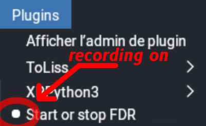
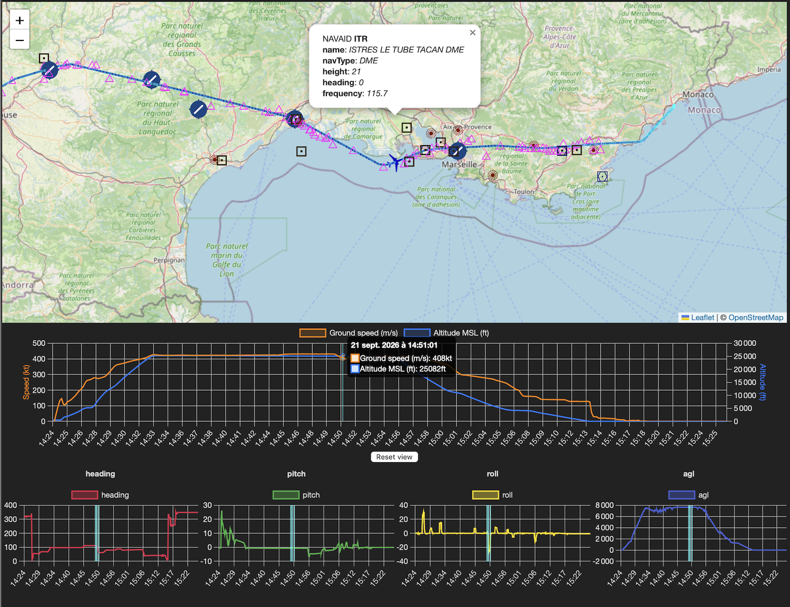
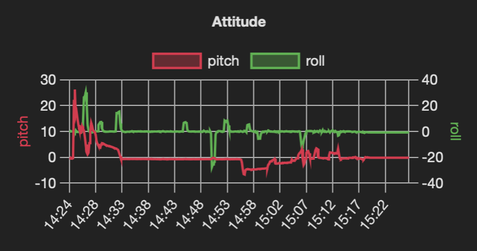

Flight Data Recorder for X-Plane
Flight Data Recorder is a customizable flight data recording plugin for X-Plane flight simulator. It generates X-Plane FDR files from a running flight. It records both dataref values and command executions.
Emphasis of this recorder is to collect data and display it in a FDR viewer, not to replay the flight althought it remains possible to do so.
Usage
The plugin installs a supervisor process that determines if the FDR recording needs to occur.
In its simplest form, recording automatically starts when aircraft movement is detected, and stops when there is no aircraft movement for 10 minutes.
Alternatively, it is possible to manually start and stop the recording through the Start or stop FDR Plugin Menu entry. An enabled marker (white dot) sits in front of the menu entry when the recorder is running. When the recording is started manually through the menu entry, it must be stopped manually by the menu entry, it will not be stopped automatically.
(Note: The opposite is not true. If the plugin is stopped manually,
but FDR determines it should run, a new recording session will be started right away.
If this behavior is not acceptable, you should add a autostart: false preference.
If autostart is set to false, the plugin will never start or stop automatically,
only on manual entries from the menu. See below.)

It is possible to bind the Start or stop FDR command to a cockpit or joystick button.
When recording, FDR detects and logs nearby navigation aids. FDR logs navaids around the aircraft and navaids used by the aircraft by finding them through their frequencies. FDR logs navaids of type VOR, DME, NDB, fixes, and airports.
Output
FDR recording files are stored in the <X-Plane 12 Folder>/Output/fdr/ folder.
Files are named after the start time of the record.
Depending on the collection frequency, the number of data collected, etc. it is difficult to estimate the size of a recording. Expect a few MB per hour or flight.
FDR File Format
FDR files slightly diverge from "formal" FDR v4 format by allowing a fractional part to seconds (milliseconds or microseconds) for more precision. Also, time between two collections may vary. (It is dynamically adjusted based on flight phase.)
FDR Meta Data
In addition to mandatory information in the record file, FDR stores meta data information for further processing and handling. Meta data is saved as a FDR record COMMent and can be ignored. Meta Data is used, for example, by the FDR reader.
In the FDR record file, the recorder writes
- Mandatory meta data
- Meta data about the requested dataref (units, sizes, etc.)
- The list of units for each column in the record
- A list of columns names for the record
- The start and stop date/time of the recording in both simulator UTC time and computer local time.
Information is written as comments before the data records.
End of recording also write a few more meta data like end of recording date and time, and some summary information like number of records, and flight status information if available (OOOI).
Recording Preferences
On startup, FDR locates and loads preferences stored in a preference file. Preferences are configuration values (like the frequency of the collection, etc.) and the list of X-Plane datarefs to be monitored.
There can be several preference files in X-Plane, one per aircraft, and a generic global one.
FDR first look for a aircraft specific FDR preference file in the home directory of an aircraft
<X-Plane 12 Folder>/Aircraft/.../myaircraft/fdr.prf.
This allows for recording aircraft-specific data.
This is very convenient as values recorded for a smaller GA or a larger airliner may differ.
(When the aircraft is changed, its preferences are unloaded and the preferences of the new aircraft are loaded.)
If no aircraft specific preference file is found, FDR look in X-Plane Preference folder
<X-Plane 12 Folder>/Output/preferences/fdr.prf.
This preference file should only contain generic data, not specific to particular aircraft.
The preference file is a Yaml-formatted readable text file structured as follow:
fdr_arch: APPLE
description: Demonstration preference file
frequency: 5
report_frequency: 100
chocks: AirbusFBW/Chocks
commands:
- sim/map/show_current
- name: Caution
dataref: sim/annunciator/clear_master_wcaution
before: 1
phase: [0, 2]
- name: Warning
dataref: sim/annunciator/clear_master_warning
before: 0
phase: 2
fdr_info:
- name: aircraft_icao
dataref: sim/aircraft/view/acf_ICAO
fdr_data:
- name: true_air_speed
dataref: sim/flightmodel/position/true_airspeed
unit: m/s
chart: Speeds
- name: vertical_speed
dataref: sim/cockpit2/gauges/indicators/vvi_fpm_pilot
unit: m/s # dataref is ft/min, converted by callback
callback: ${x} 0.00508 *
chart: Speeds
-
fdr_archidentifies the FDR file architecture, either APPLE or IBM. Used to determine line termitors. (CR for APPLE, CR+LF for IBM.) -
descriptionis an information field used in the log file to identify the preferences used. -
frequencyis the time, in seconds, between 2 data collection. -
report_frequencyis the number of data collections reported in the log file. It allows for simple monitoring of the data collection process. Above, every 100 records, a message is written into log.txt. -
chocksis a dataref name that will be used to check whether chocks are set (non zero value) or not (zero value). -
fdr_infois a list of Data Definition to identy a dataref value that is fetched only once at the start of the recording. The value is saved as a comment in the header file of the recording. Example of FDR info fields may include departure and arrival airport, weather information... as long as the data is available as a dataref. -
fdr_datais a list of Data Definition that are collected and reported. -
commandsis a list of commands, expressed as X-Plane path or Command Definition structure. The execution of any of these command in logged.
Collected Data Definition
Collected data is described by the following fields:
name: Name of the data field, used as a column header in the FDR file. Mandatory.dataref: Name of dataref, its value is part of the data record. Mandatory.units: Information field of dataref value unit. Saved as a comment in the header of the record file. Optional but highly recommanded.factor: Convertion factor (float value) used by FDR DREF parameter. Optional. Not used by FDR.callback: Reverse polish notation expression, in which${x}is replaced with the dataref value. Optional.chart: A hint to group data in the same chart in the viewer. Optional. (If the chart name isno-chart, the data is not presented in the viewer.)
The callback string is a Reverse polish notation expression. Its goal is a provide an easy mechanism to alter raw dataref values to meaningful record value with minimal impact.
Typically, it can be used for unit adjustment expressions like
${x} 0.00508 *: convert feet per minute to meters per second (see example above)${x} 0.3048 *: convert ft to m${x} 32 - 1.8 /: convert Farenheit to Celsius for temperature${x} 0 round 0 eq: returns 1.0 when value rounds to zero
In the above expression ${x} is the raw numeric dataref value.
This scheme is a alternate, more sophisticated method than the built-in FDR DREF factor parameter, which remains available as the factor attribute in the Data Definition. Please note that the factor is not used in FDR, it is just forwarded in the FDR version 4 DREF attribute.
- name: vertical_speed
dataref: sim/cockpit2/gauges/indicators/vvi_fpm_pilot
unit: m/s # dataref is ft/min, converted by callback into m/s
callback: ${x} 0.00508 *
chart: Speeds
Monitored Command Definition
Monitored command is described by the following fields:
name: Name of the command. Mandatory if using a Command Definition.dataref: Name of dataref command. Mandatory.phase: Either a single phase or a list of phase to monitor. Default to2, command end.before: 0 or 1 to log execution event before or after the execution of the command (default to1, after).chart: A hint to group data in the same chart in the viewer. Optional. (If the chart name isno-chart, the data is not presented in the viewer.)
- name: Caution
dataref: sim/annunciator/clear_master_wcaution
before: 1
phase: [0, 2]
Array Datarefs
It is possible to list dataref with a python slice() syntax.
- name: eng_n1
dataref: sim/flightmodel/engine/ENGN_N1_[0:4]
Range 0:4 is called a python array slice and follow a specific syntax.
The above slice is equivalent to
- name: eng_n1[0]
dataref: sim/flightmodel/engine/engn_n1_[0]
- name: eng_n1[1]
dataref: sim/flightmodel/engine/engn_n1_[1]
- name: eng_n1[2]
dataref: sim/flightmodel/engine/engn_n1_[2]
- name: eng_n1[3]
dataref: sim/flightmodel/engine/engn_n1_[3]
Alternatively, it is possible to list indices of interest like so:
- name: eng_n1
dataref: sim/flightmodel/engine/ENGN_N1_[1,3]
which is equivalent to
- name: eng_n1[1]
dataref: sim/flightmodel/engine/engn_n1_[1]
- name: eng_n1[3]
dataref: sim/flightmodel/engine/engn_n1_[3]
Index list must be a comma separated list of integer value.
The drawback of these slices or multi-index selection is that all values of the dataref array are fetched during each data collection, but only those values that are requested are returned. (On a longer term, this can become a performance issue if many arrays are requested. As an alternative, it is always possible to fetch a single array value.)
Default Behavior and Values
Without preference file, FDR generates Version 4 file for APPLE architecture. The recording frequency is 10 seconds, and reporting frequency occurs every 100 records. (Reporting is written in X-Plane log.txt file and is useful to monitor that FDR is logging events in the FDR file.) Without preference file, FDR only record mandatory header fields once, and mandatory data (time, position, attitude, 2 convenient values, total 9 values, see below) every 10 seconds. It is a lightweight process that has no impact on the frame rate.
When the plugin is installed, this occurs automatically without user interaction.
In summary, if you install XPPython3 plugin and drop this PI_fdr.py script into it, you will have permanent «black box» function all the time. Resolution will be minimal (every 10 seconds). Data will be minimal as well (lat, lon, alt, speed, heading, pitch, roll).
If you'd like finer resolution and a few more datarefs, drop them in a global preference file. You will have permanent «black box» function all the time, without thinking about it with all data you need, at the resolution that allows you to look at it with the viewer.
If you want a better flight data recorder, with data important to you, collected at a pace that will allow finer analysis, create a preference file for your favourite aircraft. You will have permanent «black box» function for your favourite aircraft, with ability to revive the flights you made.
Specifics for ToLiss Airbus
There is a specific set up and behevior for ToLiss Airbus aircrafts. It automatically sets up when such an aircraft is detected.
Mandatory Data
FDR collects the following data which is required in the header of the FDR file:
ACFT: the aircraft file to use, with full directory path from the X-Plane folder (ex:Aircraft/Airbus/ToLiss A321.acf).TAIL: tail number of the aircraft (ex:C-GTLU). Must come immediately after theACFTline.TIME: ZULU time of the begining of the flight (ex:18:54:32) (TIME is optional in FDR v4).DATE: date of the flight (ex:03/18/26, month/day/year format).PRES: sea-level pressure during the flight in inches Hg (ex:29.92).TEMP: sea-level temperatre during the flight in degrees Farenheit (ex:65).WIND: wind during th flight in degrees, then knots (ex:230,17: 270°, 17kt).
FDR collects the following data which is the minimum required in the FDR file:
- UTC time of day (with fractional second if available:
18:54:32.678324) - longitude
- latitude
- altitude (MSL, WSG84 ellipsoid, in feet)
- heading
- pitch
- roll
UTC time is the simulator UTC time when the flight occurs.
In addition to these mandatory values, FDR always records the following two convenient values:
- ground speed
- elevation (above ground level, in meters)
Both are used to detect lateral and vertical movements like takeoff and landing. They are also used to display conventional flight report in the viewer.
In a record, all values are decimal floating point values, separated by a ,
with the exception of time which is formatted as shown above and always is
the first value of the record.
Optional Additional Data
Additional fdr_data is saved after these mandatory values as additional columns,
one column per additional data.
Installation
Flight Data Recorder is a X-Plane plugin written in python. It needs XPPython3 X-Plane plugin to run.
Install PI_fdr.py file in <X-Plane 12 Folder>/Resources/plugins/PythonPlugins.
Reload scripts in XPPython3 through the Plugin menu entry.
On first start, or after XPPython3 upgrades, the script may download missing python package like Yaml. When completed, simply reload XPPython3 script again.
Reader
There is a compagnon script fdr_reader.py that reads a FDR record file and generates
- a GeoJSON file that can be viewed on geojson.io for example,
- a CSV file with all data (example viewer.)
In the GeoJSON file, FDR data is added as a list of feature properties along with (3D) Point position. The GeoJSON file also contain additional Features like the whole flight path as a LineString.
In the CSV file, no meta data is available, just records. (There is no nav aid location, and no command trigger report in the CSV file.)
Viewer
There is a compagnon web page frd_viewer.html to display either a GeoJSON formatted FDR file
or a Version 4 FDR file in a simple, basic map and charting page.
You can drop FDR v4 files, GeoJSON or CSV files generated by fdr_reader.
The viewer is under development.
The layout of charts is automagic, based on the number of featured data.
If the FDR file has been produced by the plugin, it contains additional information and meta data that allow for better display of information in the viewer.
- Collected navaids are displayed on the map,
- Moment of executions of monitored commands are shown both on the map and on a specific chart.
If using FDR default values/settings recorded without preference file, FDR Viewer display a Flightradar24/Flight Aware type of graph with
- A map of the flight,
- Ground speed and altitude MSL,
- Mandatory values collected by FDR: Heading, pitch, and roll.

If additional values are requested through a preference file, all additional values are presented in similar graphs.
The Data Definition structure contains a chart attribute.
It is the name of a chart.
All data with the same chart name will be displayed on the same chart.
This allow for grouping and organisation of data on charts.
Here is an example of the standard viewer presentation:
FDRData(name="pitch", dataref="sim/cockpit2/gauges/indicators/pitch_electric_deg_pilot", chart="Attitude")
FDRData(name="roll", dataref="sim/cockpit2/gauges/indicators/roll_electric_deg_pilot", chart="Attitude")
In this case, both data values will presented in the same chart named Attitude.

Map is presented thanks to Leaflet. Charts are presented thanks to ChartJS. Navaid icons stolen from Little Navmap.
All code by devleaks, a HI. Hence bugs.
Troubleshooting
Support
We only provide support for the core functions like data acquisition and FDR reader.
The FDR viewer is considered an addition to the above and is not part of the FDR core function. Efforts will always be made to get the viewer working in sync with the recorder/writer, but with a lower priority.
There are other tools and online applications capable of plotting charts from supplied GeoJSON or CSV data file.
FDR logs a few messages in X-Plane log.txt file, especially reports it is working
and logging events.
Please report issues on GitHub. Always provide log.txt and XPPython3Log.txt files.
The script will not work on X-Plane release 11 as it depends on newer XPPython3 features.
See Also
<X-Plane 12 Folder>/Instruction/FDR Example Version 4.fdr(as a reference)<X-Plane 12 Folder>/Instruction/FDR Example Version 3.fdr(for comparison, information)